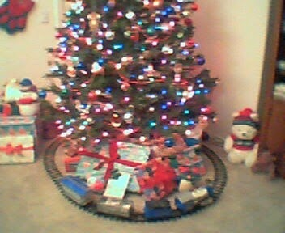

Recovered weblog entry
A new week
Ahem, a new week.
This weekend was enjoyable, I must say. Wife and I got to spend some time with a few friends of ours. We ate at their place and then headed to Mesa to view the Mesa Arizona temple lights.
It was beautiful, as it always is. However this year, there seemed to be a few more lights around than usual. In fact, I was going to place a picture of the lights here on the site, but with my poor camera phone, it made the Christmas lights appear as if they were fire, and every tree around the temple grounds was engulfed in flames.
As you peruse the site this week, you'll be happy to note that the Media page has finally been updated. Go visit when you have a chance.
There's a few pictures there, one poor song, and the hope of a lot more content in the coming month. Please, please keep in mind one thing: I don't know too much about photography, I simply like taking pictures of random scenery too much. It'll get better, I promise. I haven't had a decent camera in ages.
I also changed the front page picture, but I'm still trying to get used to it. Maybe I was just too attached to the other one.
No shopping trips this weekend, though. No money this time around. We'll hit the stores as soon as Friday rolls around. Oh, that reminds me. We have a train around our tree now.

There you go, have a fuzzy picture, compliments of Sanyo.
It's one of the greatest things to have during the holidays. I highly recommend it. In fact, if you don't have one, start a fund, go shopping, look around, go nuts. Just make sure yours doesn't play a high-pitched "Christmas Favourite" as the box mentioned. Yeah, that's how the manufacturer spelled favorite. They must correlate Christmas time with Merry Olde England. And who doesn't? Disney sure does.
And that's it. No more for today, says I. Have a great week, we'll see you tomorrow.
Oh yes, you know what tomorrow is.